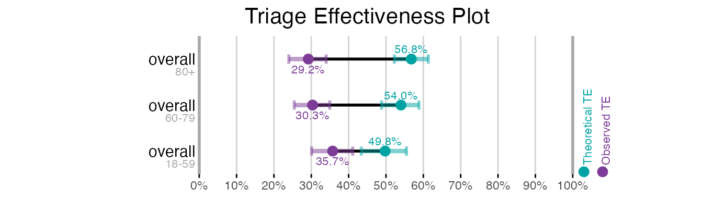
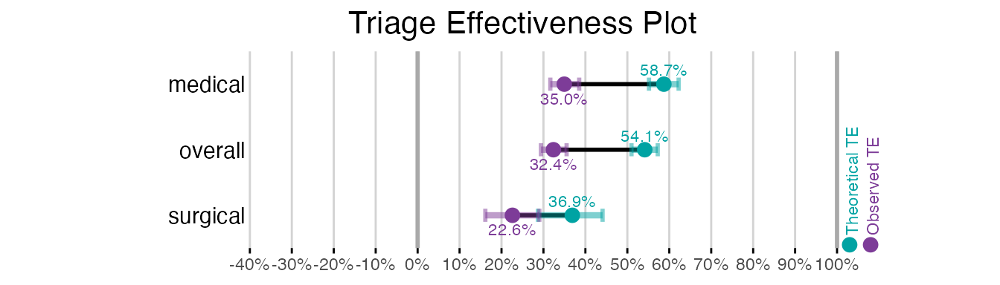

library(trieff)
#> Loaded trieff 0.8.7
#> System capable of parallel processing with multisession backend
#> Maximum available workers: 16
#> Note: Individual functions will determine optimal core usage at runtime
library(dplyr)
#>
#> Attaching package: 'dplyr'
#> The following objects are masked from 'package:stats':
#>
#> filter, lag
#> The following objects are masked from 'package:base':
#>
#> intersect, setdiff, setequal, union
# Initialize and simulate data once at the start
data <- init(sem_malmo_synth) %>%
sim_te()
#> [1] "Creating segments out of dataframe 2025-02-27 09:50:50.846825"
#> [1] "Filtered to 1486 segments with LOSET cases"
#> [1] "Total LOSET cases: 5491"
#> [1] "Starting multisession with 1 cores. 2025-02-27 09:50:50.986987"
#> [1] "Simulations are done! 2025-02-27 09:50:55.841043"Introduction
The plot_te() function provides flexible visualization
of Triage Effectiveness results. This vignette demonstrates how to
create and customize these visualizations, building on the analyses
shown in the calc_te and bootstrap vignettes.
Prerequisites
- Calculated TE metrics (see
vignette("calc_te")) - Optional: Bootstrap results for confidence intervals (see
vignette("bootstrap"))
Basic Plotting
Let’s start with a basic overall TE plot:
# Calculate TE metrics
te_results <- calc_te(data, overall_only = TRUE)
# Create basic plot
plot_te(te_results)By default, the plot shows both Theoretical TE (teal) and Observed TE (purple) values. The horizontal lines connecting these points represent the Observed-Theoretical Gap (OTG).
Plotting Bootstrap Results
The plot_te() function automatically handles bootstrap
results when they’re available. Let’s see how this changes the
visualization:
# Calculate TE with bootstrap
te_bootstrap <- calc_te(data,
bootstrap = TRUE,
overall_only = TRUE)
#> [1] "Starting bootstrap iterations 2025-02-27 09:50:56.748276"
#> [1] "Bootstrap iterations done 2025-02-27 09:51:15.677778"
# Plot with confidence intervals
plot_te(te_bootstrap)Notice how the plot now includes variability intervals (lighter shaded areas) for both TTE and OTE. These intervals are derived from the bootstrap analysis and help visualize the uncertainty in our estimates.
Subgroup Analysis
We can visualize TE patterns across subgroups. Let’s use the age group example from the calc_te vignette:
# Create age groups
data <- data %>%
mutate(age_group = cut(age_at_arrival,
breaks = c(0, 59, 79, Inf),
labels = c("18-59", "60-79", "80+")))
# Calculate and plot TE by age group
te_age <- calc_te(data,
var1 = "age_group",
bootstrap = TRUE,
overall_only = TRUE)
#> [1] "Starting bootstrap iterations 2025-02-27 09:51:16.210427"
#> [1] "Bootstrap iterations done 2025-02-27 09:51:36.236595"
plot_te(te_age)
Handling Negative TE Values
In some cases, particularly when analyzing specific units, we might encounter negative TE values. This requires special handling of the plot’s x-axis. Let’s demonstrate this with two plots - one showing only orthopedic units (which in the SEM synthpop has negative values) and another showing all units:
# First, let's get results for orthopedic unit only
ortho_data <- data %>%
filter(unit == "orthopedics")
te_ortho <- calc_te(ortho_data, bootstrap = TRUE)
#> [1] "Starting bootstrap iterations 2025-02-27 09:51:36.878078"
#> [1] "Bootstrap iterations done 2025-02-27 09:51:44.384094"
data_other <- data %>%
filter(!unit == "orthopedics")
# Then get results for all units minus orthopedics
te_all <- calc_te(data_other, bootstrap = TRUE)
#> [1] "Starting bootstrap iterations 2025-02-27 09:51:44.759834"
#> [1] "Bootstrap iterations done 2025-02-27 09:52:01.404572"
# Plot orthopedic results
plot_te(te_ortho)
# Plot all units with adjusted x-axis
plot_te(te_all, min_x = -0.4)
Notice how setting min_x = -0.4 ensures consistent scale
and alignment between the plots, making it easier to compare results
across different units.
Advanced Plot Customization
While the default settings are suitable for most purposes,
plot_te() offers several customization options:
# Example with custom settings
plot_te(te_bootstrap,
var_alpha = 0.9, # less transparent variability intervals
dumbell_width = 1.5, # Thicker connecting lines
label_style = "small", # small text labels
title = "Custom TE Plot") # Custom titleKey customization parameters include:
var_alpha: Controls transparency of variability intervals (0-1)dumbell_width: Width of lines connecting TTE and OTE pointslabel_style: Can be “none”, “small”, “full”, or “half” (default)show_tte/show_ote: Toggle display of specific metricsshow_var: Toggle display of variability intervals
For more details on available parameters, see
?plot_te.
Summary
This vignette has demonstrated how to:
Create basic TE plots
Visualize bootstrap confidence intervals
Handle subgroup analyses
Deal with negative TE values
Customize plot appearance
For more complex analyses, consider combining these visualization techniques with the methods described in the calc_te and bootstrap vignettes.